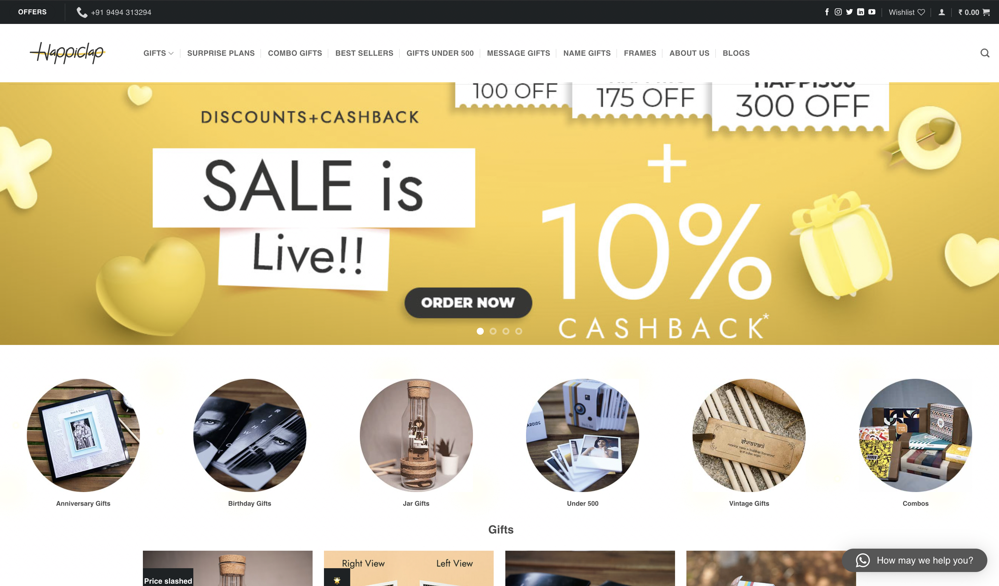
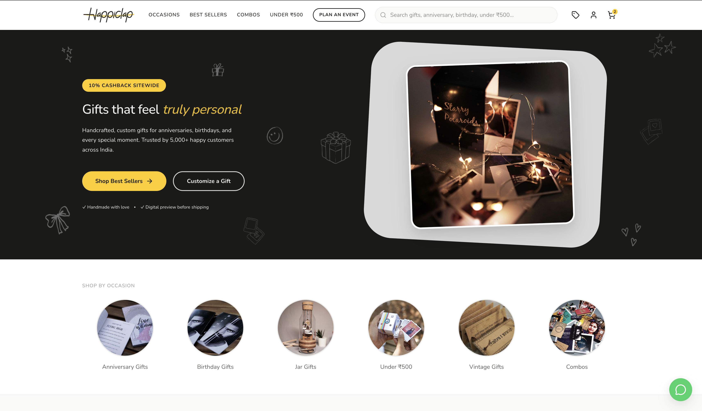

Happiclap - a gifting app where users couldn't find the gift button.
A live product, 40+ user reviews, and a heuristic framework. No internal data, no engineering access - just a decision to look closely and say what I saw.
I came across it while buying a gift.
I was looking for a birthday present online and landed on Happiclap. Within 30 seconds I was confused - not because the product was broken, but because something made me feel like I was doing the gifting wrong, not the app. I went back and looked more carefully, then decided to audit it properly.
One thing upfront: I wasn't hired for this. No analytics, no session recordings, no internal context. Everything here comes from the live product and 40+ public App Store and Play Store reviews. This is external - some decisions are inferences, not facts. I'll say when.
The product grew features without growing clarity.
A gifting platform has one job: help someone find and send a meaningful gift in as few decisions as possible. What I found was a product organised around what it sold, not around what the user was trying to do. Features had accumulated. Navigation had multiplied. Clarity hadn't kept up.
The feeling first. The cause second.
The first thing I noticed wasn't the navigation - it was my own two-second pause on landing. That pause is the symptom. The navigation was the cause.
What I was working without.
Organise around intent, not taxonomy.
A user arriving at Happiclap is in one of three states: they know what they want, they have an occasion and need ideas, or they're exploring. I chose occasion-led browsing as the primary path - it contains the other two and matches the most common gifting scenario.
What actually changed.


What I gave up to get what I got.
What I'd do differently.
Start with even five user interviews. Better than nothing. Not a substitute for watching a real person navigate without guidance.
Understand the business before moving its surfaces. I made a UX call in isolation from a product one. That's the gap I'd close first.
The honest version of what this shows: I can look at a live product, form a point of view, and explain the reasoning - including the parts I'm uncertain about. That combination is more useful in a product role than a cleaner narrative that hides the gaps.